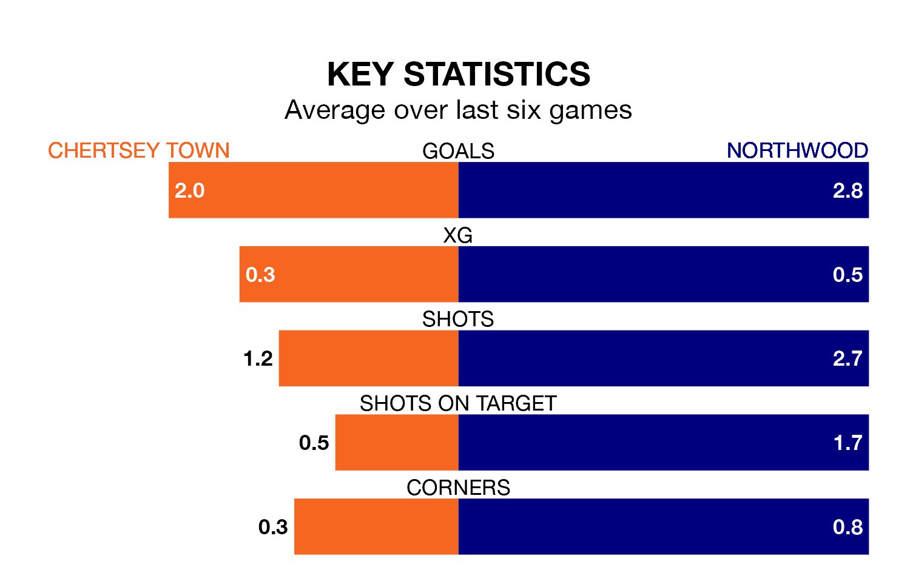

Chertsey Town are on an excellent run ahead of hosting Northwood at the Alwyns Lane Football Ground on Saturday, with 16 points collected from their last six games.
The Curfews have picked up five wins and one draw in their last six Isthmian League Division One – South Central games, and face a Woods side whose last six games have brought two wins and one draw.
Chertsey are top of the table after 29 games, of which they have won 23 and drawn five, earning 74 points.
Northwood are 14 places behind Town in 15th, with nine wins and three draws putting them on 30 points.
With 78 goals in 29 games so far this season, the Curfews are the league's second-highest scorers with 2.7 goals per game. And they are conceding fewer than average, letting in 24 goals at a rate of 0.8 per game.
The Woods are also above average scorers, with 1.8 goals per game, compared to a league average of 1.7. They have also conceded 1.8 goals per game.
In the last 10 years, Chertsey and Northwood have played each other on six occasions. They won three each.
On average, the Curfews scored 2.3 goals and the Woods 2.0 in those matches.
Their last meeting was on October 21, when Chertsey won 4-2 away.
Chertsey's last match was on February 24, a 4-4 draw against South Park.
Northwood lost 3-2 against Hanworth Villa last time out, on Tuesday.
Updated: 09:34 (UTC), 08/03/24